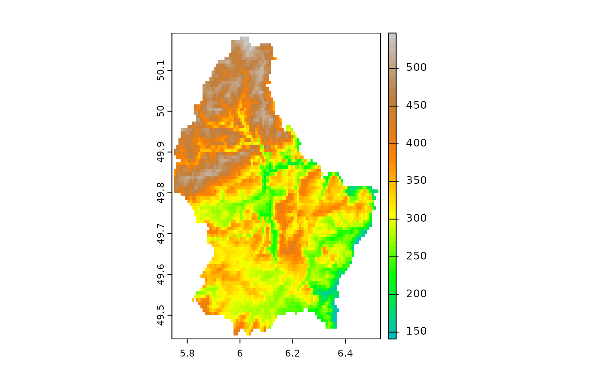

color palettes for mapping
mappal.RdGet a color palette for mapping. These palettes were copied from GRASS.
Arguments
- name
character (name of a palette, see Details), or missing (to get the available names)
- n
numeric. The number of colors
- ...
additional arguments that are passed to
colorRamp
Details
| Name | Description |
| aspect | aspect oriented grey colors |
| bcyr | blue through cyan through yellow to red |
| bgyr | blue through green through yellow to red |
| blues | white to blue |
| byg | blue through yellow to green |
| byr | blue through yellow to red |
| curvature | for terrain curvatures |
| differences | differences oriented colors |
| elevation | maps relative ranges of raster values to elevation color ramp |
| grass | GRASS GIS green (perceptually uniform) |
| greens | white to green |
| grey | grey scale |
| gyr | green through yellow to red |
| haxby | relative colors for bathymetry or topography |
| inferno | perceptually uniform sequential colors inferno |
| magma | perceptually uniform sequential colors |
| oranges | white to orange |
| plasma | perceptually uniform sequential colors |
| rainbow | rainbow colors |
| ramp | color ramp |
| random | random colors |
| reds | white to red |
| roygbiv | |
| rstcurv | terrain curvature |
| ryb | red through yellow to blue |
| ryg | red through yellow to green |
| sepia | yellowish-brown through to white |
| viridis | perceptually uniform sequential colors |
| water | water depth |
| wave | color wave |
Examples
map.pal("elevation", 10)
#> [1] "#00BFBF" "#00E254" "#1CFF00" "#A9FF00" "#FFE200" "#FF9B00" "#E97F14"
#> [8] "#C67F37" "#C39F7B" "#C8C8C8"
r <- rast(system.file("ex/elev.tif", package="terra"))
plot(r, col=map.pal("elevation"))

map.pal()
#> [1] "aspect" "bcyr" "bgyr" "blues" "byg"
#> [6] "byr" "curvature" "differences" "elevation" "grass"
#> [11] "greens" "grey" "gyr" "haxby" "inferno"
#> [16] "magma" "oranges" "plasma" "rainbow" "ramp"
#> [21] "reds" "roygbiv" "rstcurv" "ryb" "ryg"
#> [26] "sepia" "viridis" "water" "wave"